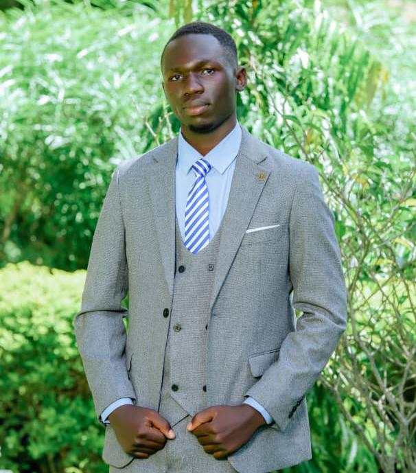
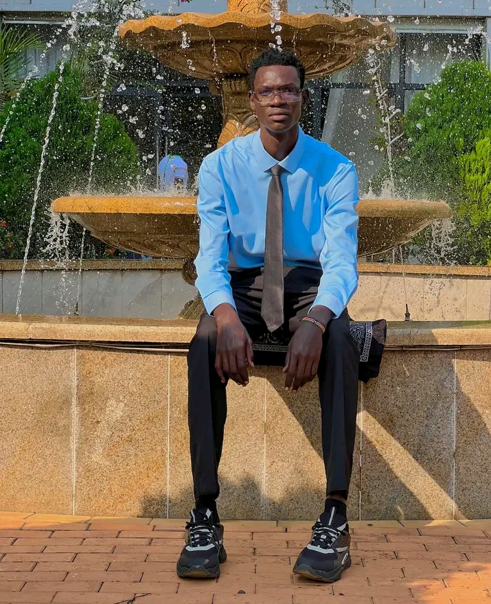
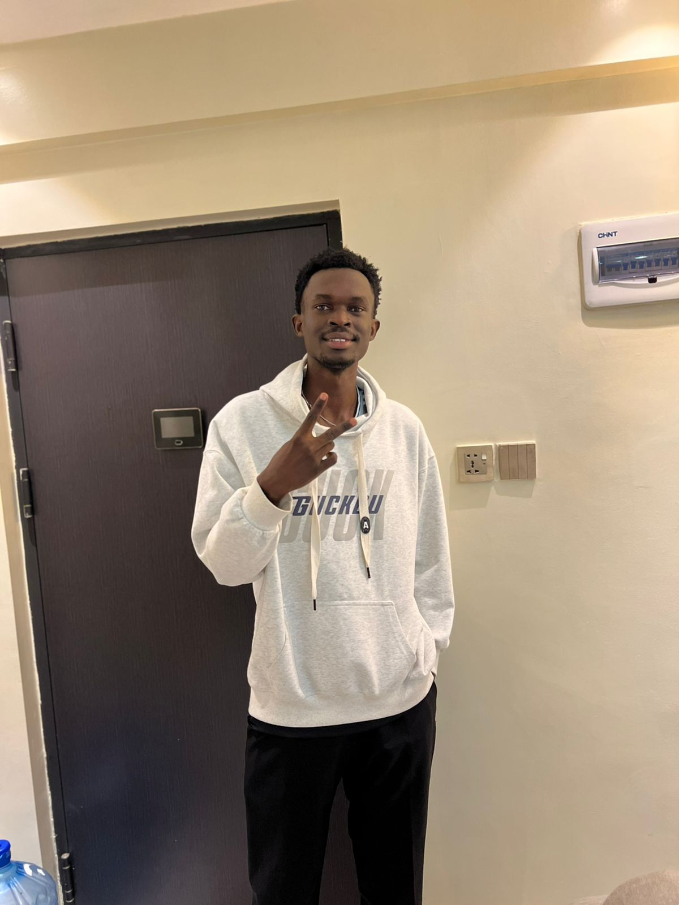
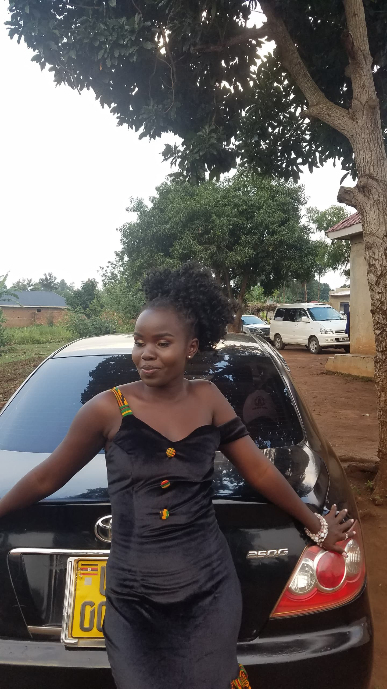
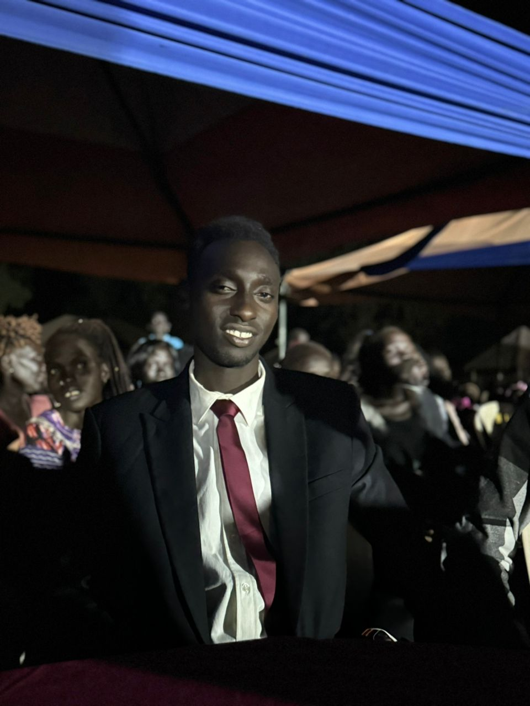

Connected • Valued • Part of the Legacy
Associate Students are individuals who studied at Mount Olive Good Shepherd but did not complete Primary Seven (P7). They remain part of the alumni community and are still connected to the school’s legacy.
A Gospel artist and dancer, using his talent to inspire, entertain, and spread positive messages through music and performance.
A YouTuber and businessman, building his brand through digital content creation while actively engaging in entrepreneurial ventures.

An expert in the tourism sector, contributing to travel, hospitality, and cultural promotion through professional experience and knowledge.

Currently studying Engineering, building skills in design, problem-solving, and technical innovation for the future.
An expert in the tourism sector, contributing to travel, hospitality, and cultural promotion through professional experience and knowledge.
Currently pursuing Social and Economics in the Department of Statistics.
A footballer and immigration officer.

Currently pursuing Petroleum Engineering.
An Immigration Officer contributing to national service.
Currently studying Laboratory Science.

Continuing her academic and personal development.

Currently pursuing Mechanical Engineering.